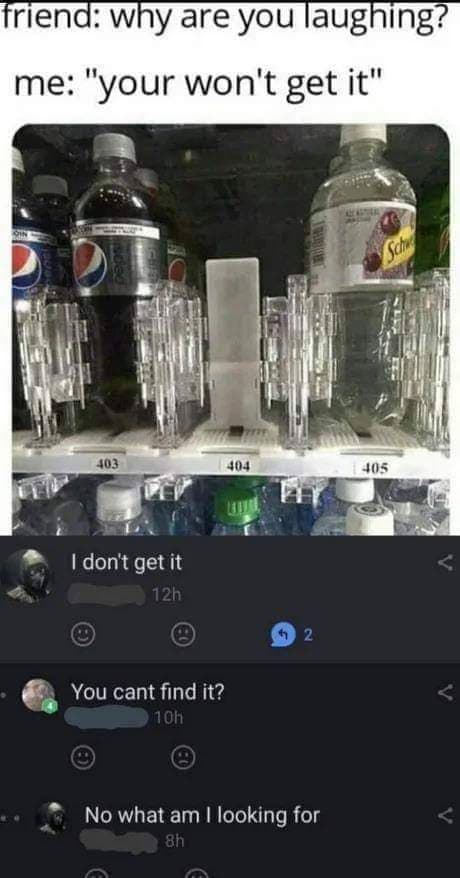
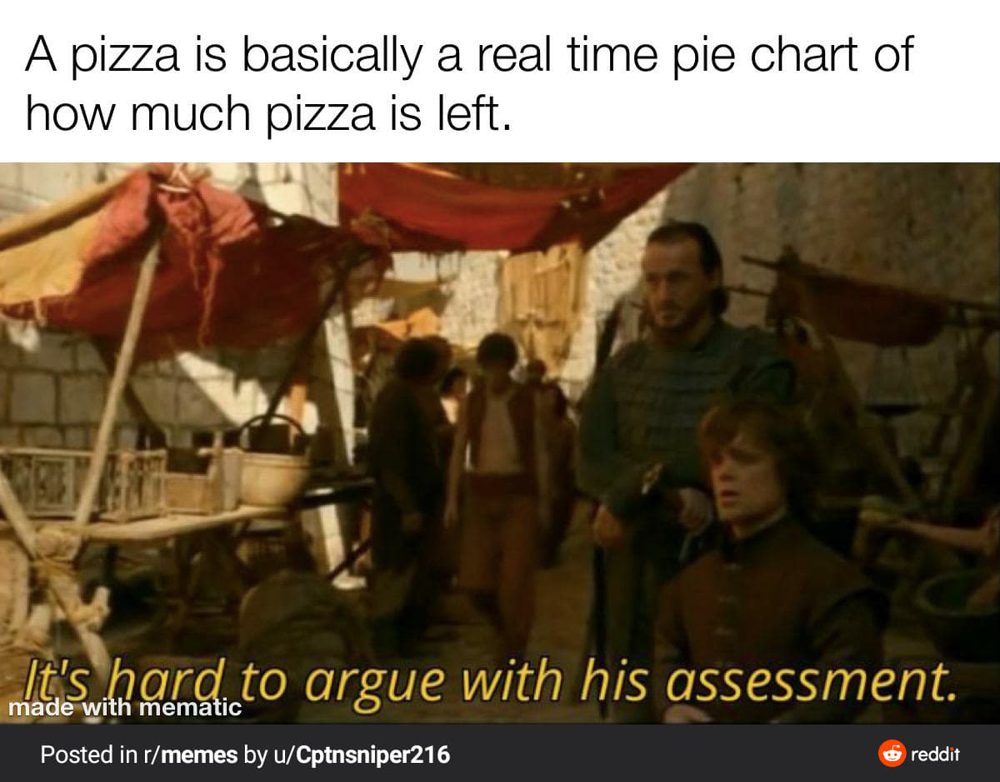

'Tis a fine day for a meme, milord 🧐
Tutaj znajdziesz kilka memów z czasów zarazy
Czyste niebo

Page not found
Przechowywanie w chmurze
Bądź jak pan Darcy

Germans vs germs

Pamiętajcie o słuchawkach

Biologia w domu
Nie rób impulsywnych zakupów

Ups

Pizza
Zaraza

Kto jest bez winy niech pierwszy rzuci kamieniem

Guilty as charged

Na górę